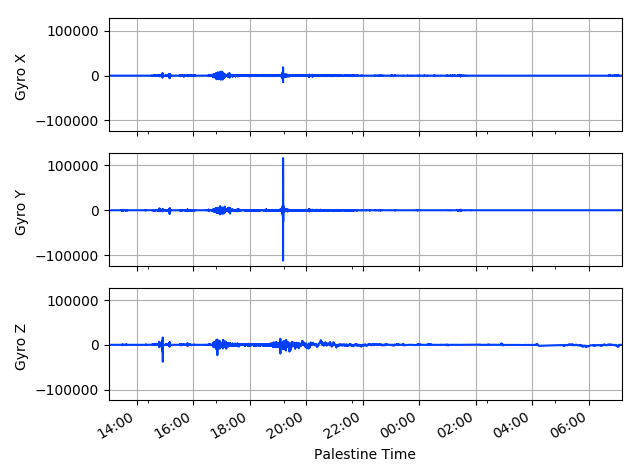
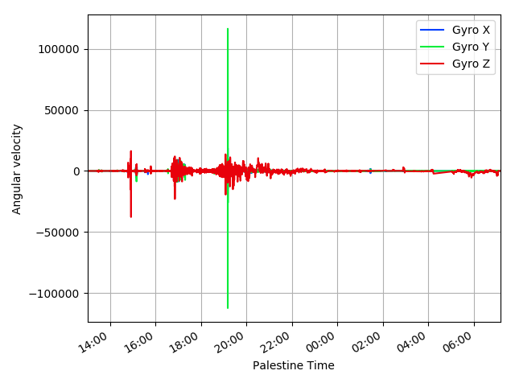
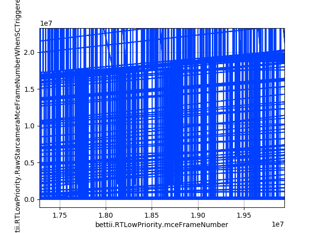
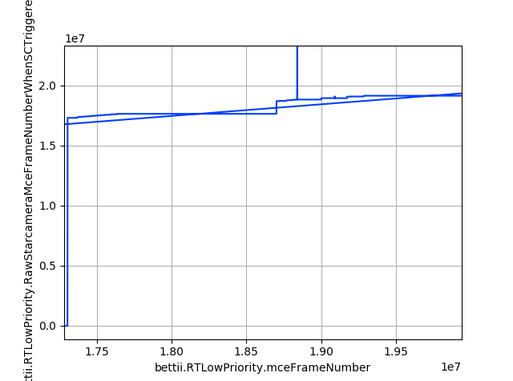
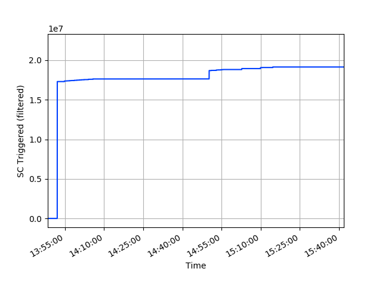

Tutorial¶
An Introductory Example¶
A good start to understand better how all of this works is with a simple example. The following code is available at scripts.gyros and plots directly the gyroscopes data:
from utils.config import flightDisksFolders,plt
from utils.dataset import DataSet,pd, plotColumns
from utils.field import Field
folders=flightDisksFolders
fieldsList=[]
fieldsList.append(Field('bettii.GyroReadings.angularVelocityX',label='Gyro X',conversion=0.0006304))
fieldsList.append(Field('bettii.GyroReadings.angularVelocityY',label='Gyro Y',conversion=0.0006437,range=2e5))
fieldsList.append(Field('bettii.GyroReadings.angularVelocityZ',label='Gyro Z',conversion=0.0006324,range=2e5))
ds = DataSet(fieldsList=fieldsList,foldersList=folders,verbose=True,rpeaks=False)
M=100
ds.df = ds.df.iloc[::M] #Downsample
print "Converting to Palestine Time..."
ds.df.index = ds.df.index - pd.Timedelta(hours=5) # Palestine time conversion (Archives folder names are in UTC)
print "Cropping time"
time_start=pd.datetime(2017, 6, 8, 13)
time_end=pd.datetime(2017, 6, 9, 10)
ds.df = ds.df.loc[time_start:time_end]
time_label = 'Palestine Time'
print "Plotting.."
plotColumns(ds.df,xlabel=time_label)
plotColumns(ds.df,xlabel=time_label,ylabels=['Angular velocity'],ncols=0)
print "Show..."
plt.show()
After running the previous script we will obtain two new figures:
 {kind=link}
{kind=link}
Now we will analyze in more detail the different parts of the script.
Imports:
from utils.config import flightDisksFolders,plt
from utils.dataset import DataSet,pd, plotColumns
from utils.field import Field
The goal of these imports is to load in our environment some names that will be used later.
When we execute the first line, the module utils.config runs and we keep the variables flightDisksFolders– a list of Archive folder names– and plt – a matplotlib.pyplot object already configured.
After the imports, a list of fields is generated:
fieldsList=[]
fieldsList.append(Field('bettii.GyroReadings.angularVelocityX',label='Gyro X',conversion=0.0006304))
fieldsList.append(Field('bettii.GyroReadings.angularVelocityY',label='Gyro Y',conversion=0.0006437,range=2e5))
fieldsList.append(Field('bettii.GyroReadings.angularVelocityZ',label='Gyro Z',conversion=0.0006324,range=2e5))
Each Field is constructed in a similar manner. If we focus on the second gyroscope, we are defining a custom label Gyro Y that will be used as the column name in the generated dataframe and also as the default label for the legends in the plots. The conversion keyword argument is a factor that will be multiplied at every data point in the field. In the case of the gyroscopes this conversion is performed to obtain the information in arcsec/s units. Finally, the range parameter defines a valid range for the data. If there is any data point outside +-range, it will be discarded. This is useful to filter some undesired parsing errors.
All the reading process of the different files is performed inside the DataSet construction:
ds = DataSet(fieldsList=fieldsList,foldersList=folders,verbose=True,rpeaks=False)
The line is quite self-explanatory. After running succesfully this part, we will have a pandas.Dataframe at the attribute ds.df. If the verbose argument is True we will see the evolution of the reading process in our console. The only confusing term is rpeaks. This option, when it is True, will remove all the instants where the absolute value of all the fields in the dataframe are below 1. The reason behind that is because there are some group of fields that suddenly jump to values close to 0 at the same exact time.
When dealing with large amounts of data, the handling of the plots can be very slow. For that reason, a downsample is performed before calling the plotting functions:
M=100
ds.df = ds.df.iloc[::M] #Downsample
In this case we are picking one sample of every 100.
When merging multiple folders, the indexing of the generated dataframe is always in time, not in frame numbers. That is because between folders, a reset of the frame number counter can occur.
If we only read from a single folder, the timeIndex argument of DataSet decides wether we use frame numbers or time. The option by default is to use the frame numbers.
The time information is extracted from the folders name. If we use the disks folders, the time zone will be different. That is why we substract 5 hours to obtain the time at the launch site:
print "Converting to Palestine Time..."
ds.df.index = ds.df.index - pd.Timedelta(hours=5) # Palestine time conversion (Archives folder names are in UTC)
The pandas library offers an easy way to slice dataframes:
print "Cropping time"
time_start=pd.datetime(2017, 6, 8, 13)
time_end=pd.datetime(2017, 6, 9, 10)
ds.df = ds.df.loc[time_start:time_end]
Here, we are getting the data that is only between 2017/06/08 13:00 and 2017/06/09 10:00.
To generate the plots, the function utils.dataset.plotColumns() is used. This function plots all the columns of the dataframe in a single figure. The ncols parameter determines the number of columns of the subplots layout. If ncols is set to 0, there will be a single subplot with all the lines overlapped.
print "Plotting.."
plotColumns(ds.df,xlabel=time_label)
plotColumns(ds.df,xlabel=time_label,ylabels=['Angular velocity'],ncols=0)
plt.show()
The final line plt.show() will show all the figures created. It is a blocking method, the script will stop there until all the figures are closed.
In addition, note how we can obtain similar results just using the functionalities that the library pandas offers:
axes=ds.df.plot(layout=(3,1),subplots=True)
axes[2][0].set_xlabel(time_label)
ax=ds.df.plot()
ax.set_xlabel(time_label)
ax.set_ylabel('Angular velocity')
plt.show()
Bad values¶
Some fields show peaks, specially the ones at bettii.RTLowPriority and bettii.RTHighPrioirty
The peaks are classified in two types:
- sudden returns to values close to 0. These peaks seem to be synchronized, they affect almost all the fields at the same time.
- jumps to high values. Probably due to parsing errors.
To solve this issues, two main solutions are proposed.
The first and easiest one is to use the rpeaks flag in the DataSet constructor. When rpeaks is True, all the rows with all the absolute values below to 1 will be removed. The same result is achieved if we use exclusively the pandas library:
df = df.loc[(df.abs() >= 1).any(1)]
The fields range attribute is useful to remove undesired parsing errors. This parameter defines a valid range for the field data. Then, the readField() function will remove any data point of the field that is not contained in the ±range interval.
Once we have constructed our dataset, it is possible that we still have some residual errors. To remove them, a hard filtering technique can be applied with the filterArray() function. We can also filter an entire Dataframe with filterDataframe.
Bad mce frame numbers¶
When a new Aurora archive is created, some of the fields start with leading low values and have 0 values once every two samples at least. The mceFramenumber fields are also affected by the peaks issues commented above. To solve these problems, the readField function – that is called when we create a new DataSet object – will remove any invalid frame number (zero values and values inferior to the first frame number will be discarded). Also, to avoid possible parsing peaks, a maximum default value of 22880070 frame counts is used. This number is the highest mceFrameNumber achieved during the flight.
Example¶
As an example of the problem, here we show the raw values of the bettii.RTLowPriority.RawStarcameraMceFrameNumberWhenSCTriggered field. The script scripts.plotFieldRaw was used:
folders=flightDisksFolders
field='bettii.RTLowPriority.RawStarcameraMceFrameNumberWhenSCTriggered'
time_field='bettii.RTLowPriority.mceFrameNumber'
print "Folder name \t"+field
data=[]
time=[]
#folders=['F:/GondolaFlightArchive/17-06-09_01_51_04/']
for folder in folders:
d=load_single_field(folder+field,datatype=Field.DTYPES[field])
t=load_single_field(folder+time_field,datatype=Field.DTYPES[time_field])
data=data+list(d)
L=len(d)
time=time+list(t[:L])
name=folder.split('/')[-2]
print name+":\t"+str(len(d))+" raw values. "+str(len(t))+' FN values.'
print "Plotting.."
M=100 #downsampling factor
plt.plot(time[:L:M],data[:L:M])
plt.ylabel(field)
plt.xlabel(time_field)
print "Show.."
plt.show()
| 
Raw values of the field |

One of every 100 raw values of the field |
{kind=link}
{kind=link}
We can see how the majority of bad values dissapear if we downsample the raw values by a factor of 100. A better option will be to use the DataSet class together with the filterDataframe() function:
fieldsList=[Field('bettii.RTLowPriority.RawStarcameraMceFrameNumberWhenSCTriggered',label='triggers',range=3e7)]
ds = DataSet(fieldsList=fieldsList,foldersList=folders,verbose=True,rpeaks=False)
print "Plot"

|

|
{kind=link}
External documentation¶
For more information about the libraries used: